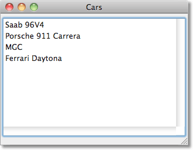
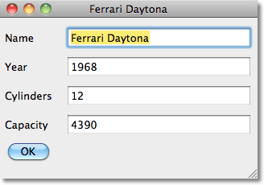
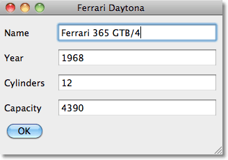
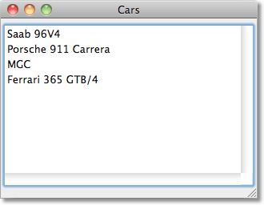

Object Editor
CLOSオブジェクトを使うと、Lispで簡単にシンプルなデータベースを実装できます。 この例では、シンプルなobject editorを用いて、CLOSオブジェクトを書くためのCAPI interfaceの使い方を説明します。
例
*cars*という変数にCLOSオブジェクトのリストがあると仮定します。そうすると、次のようにオブジェクトのリストを表示できます。
(make-list-window *cars*)
これを実行すると、次のように表示されます:

項目をダブルクリックすると、そのオブジェクトのスロットを表示する編集画面が表示されます:

あるフィールドを編集すると、対応するスロットが変更されます。

名前のフィールドを編集すると、一覧のウィンドウに反映されます。

そのエディターは、defclass の定義からスロットの名前を自動で読み取るので、スロットを defclass の定義に加えると、フィールドが編集ウィンドウに加わります。別にプログラムを書く必要はありません。この例では、文字列と整数のスロットだけ処理できますが、他の型も容易に追加できます。
定義
edit-windowクラスは、編集されているオブジェクトに対して、thing スロットをcapi:interfaceクラスに追加します:
(defclass edit-window (capi:interface) ((thing :initarg :thing :accessor thing)))
The fields displayed on the edit-window use the field class, which is based on capi:text-input-pane:
edit-window で表示されているフィールドは、fieldクラスを使います。fieldクラスは、capi:text-input-paneに基づいています:
(defclass field (capi:text-input-pane)
((thing :initarg :thing :accessor thing)
(table :initarg :table :accessor table)
(type :initarg :type :accessor fieldtype))
(:default-initargs
:title-args
'(:external-min-width 72)
:editing-callback
#'(lambda (pane type) (case type (:end (save-field pane))))))
こうすることで、次のスロットをtext-input-paneクラスに追加することができます。
- thing - 編集中の親オブジェクトへの参照を含みます
- type - スロットの型。現状では、整数だけがサポートされています
- table - 親テーブルを参照します
編集ウィンドウを表示するための手順です:
(defun make-edit-window (thing table)
(let* ((ok (make-instance 'capi:push-button :text "OK" :default-p t
:callback-type :interface :selection-callback #'capi:quit-interface))
(slots-to-edit (remove-if-not #'(lambda (s) (eq (clos:slot-definition-allocation s) :instance))
(clos:class-slots (class-of thing))))
(fields (map 'list #'(lambda (slot)
(let ((slotname (clos:slot-definition-name slot))
(slottype (clos:slot-definition-type slot)))
(make-instance 'field :name slotname :thing thing
:type slottype :table table
:text (princ-to-string (slot-value thing slotname))
:title (string-capitalize slotname))))
slots-to-edit))
(layout (make-instance 'capi:column-layout :description (append fields (list ok))))
(window (make-instance 'edit-window :thing thing :title (name thing) :layout layout
:best-width 320 :confirm-destroy-function #'save-field-with-focus)))
(capi:display window)))
make-edit-window では、オブジェクトに定義されるクラスのスロットから、slots-to-edit を作ります。その後、それぞれのスロットのfieldを含むfields が作られます。それぞれのフィールドは、関連するスロットにちなんで名付けられます。これは編集されたフィールドが適切なスロットに保存されるために使われます。layout descriptionとして、capi:column-layoutが、フィールドのリストやOKボタンと一緒に生成されます。
保存のフィールド
ユーザーが編集後にフィールドの外をクリックしたとき、fieldクラスはsave-fieldを呼ぶためにediting-callbackを使います。そして、フィールドの内容が、編集されたオブジェクトの適切なスロットに保存されます。
(defmethod save-field ((f field))
"フィールドからデータを保存するために呼び出される"
(let* ((thing (thing f))
(table (table f))
(slot (capi:capi-object-name f))
(value (case (fieldtype f)
(integer (parse-integer (capi:text-input-pane-text f) :junk-allowed t))
(t (capi:text-input-pane-text f)))))
(setf (slot-value thing slot) value)
(capi:choice-update-item table thing)))
編集ウィンドウは、confirm-destroy-functionコールバックも使います。編集ウィンドウが閉じられたときに、フォーカスでフィールドを保存します。こうすることで、ユーザが、他のフィールドにフォーカスを移動しせずに、フィールドを編集してウィンドウを閉じてしまう状況にも対応できます。CAPIは、こういう状況ではcapi:text-input-paneのためにediting-callback を呼び出さないのが原因です。
(defun save-field-with-focus (w) (let ((focus (capi:pane-descendant-child-with-focus w))) (when focus (save-field focus))) t)
一覧ウィンドウ
最後に、編集されるオブジェクトが一覧表示されるためのmake-list-window関数をみましょう。ある一つのオブジェクトをクリックすると、edit-windowにあるオブジェクトを表示するためにeditを呼び出します。
(defun make-list-window (list)
(let* ((table (make-instance 'capi:list-panel :items list
:print-function #'name
:callback-type '(:data :collection)
:action-callback #'(lambda (thing table) (edit thing table))))
(window (make-instance 'capi:interface :best-width 320 :best-height 224 :title "Cars"
:layout (make-instance 'capi:column-layout :description (list table)))))
(capi:display window)))
関数editは、そのオブジェクトにedit-windowが存在するかどうかを確認します。もしあれば、新しいものを開かずにそれを前面にもってきます。
これは、複数のedit-windowが同じオブジェクトに生じる問題を回避するためです:
(defun edit (thing table)
(let ((existing (find thing (capi:collect-interfaces 'edit-window) :key #'thing)))
(if existing (capi:raise-interface existing)
(make-edit-window thing table))))
例のデータ
Object Editorをテストするために、オブジェクトを定義しましょう。
(defclass classic-car ()
((name :initarg :name :accessor name)
(year :initarg :year :type integer)
(cylinders :initarg :cylinders :type integer)
(capacity :initarg :capacity :type integer)))
整数のスロットは、:type integerが与えられるべきです。そうでなければ、スロットは文字列だと推測されます。
いくつかデータを定義してみましょう:
(defparameter *cars* (list (make-instance 'classic-car :name "Saab 96V4" :year 1967 :cylinders 4 :capacity 1498) (make-instance 'classic-car :name "Porsche 911 Carrera" :year 1984 :cylinders 6 :capacity 3200) (make-instance 'classic-car :name "MGC" :year 1967 :cylinders 6 :capacity 2912) (make-instance 'classic-car :name "Ferrari Daytona" :year 1968 :cylinders 12 :capacity 4390)))
最後に、一覧ウィンドウにオブジェクトを表示させましょう。
(make-list-window *cars*)